Всё, что мод меняет в игре. Новые версии — сверху.
Everything the mod changes in the game. Newest versions first.
Цитадель и замок дешевле. Цитадель стоит 3000 , 5 и 5
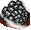
(было 7500, 10 и 10). Замок — 5000 , 10 и 10 (было 7500, 10 и 10). Для всех фракций и всех игроков. Без мода игра остаётся с прежними ценами.Новые цены и требования у одиннадцати зданий. Для всех игроков, компьютер строит по тем же правилам.
Вернуть оригинал: в файле h4ddraw.ini строка AltBuildingBalance=0, затем перезапустить игру.
Новые параметры существ. Младшие уровни стали ближе по силе к старшим, как в третьих Героях: у существ 1-го и 2-го уровня больше прирост и урон, у многих существ 3-го уровня выше прирост, у некоторых меньше атака и защита, у 4-го уровня меньше урон. Для всех игроков и нейтральных армий. Было → стало:
| прирост | урон | 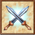 атака/защита | |
|---|---|---|---|
| БандитХаос | 26 → 33 | 1–3 → 1–4 | |
| КентаврСила | 9 → 12 | 3–5 → 3–6 | |
 АрбалетчикЖизнь АрбалетчикЖизнь | 16 → 21 | ||
 ГномПорядок ГномПорядок | 18 → 23 | 2–3 → 2–4 | 11/11 → 10/13 |
| БерсеркСила | 19 → 24 | 2–3 → 2–4 | |
 ХалфлингПорядок ХалфлингПорядок | 23 → 29 | 1–2 → 1–3 | |
| БесСмерть | 28 → 36 | 1–2 → 1–3 | |
| Лепреконнейтрал | 22 → 28 | 1–2 → 1–3 | |
| ОркХаос | 16 → 21 | 1–3 → 1–4 | |
| Крестьяниннейтрал | 36 → 46 | 2–3 → 2–4 | |
| Пиратнейтрал | 24 → 31 | 1–2 → 1–3 | |
| СкелетСмерть | 1–2 → 1–3 | ||
| ОруженосецЖизнь | 21 → 27 | 2–3 → 2–4 | |
| ФеяПрирода | 1–2 → 1–3 | ||
| Троглодитнейтрал | 19 → 24 | 2–3 → 2–4 | |
| ВолкПрирода | 15 → 19 | 2–3 → 2–4 | |
| Зомбинейтрал | 15 → 19 | 2–4 → 2–5. |
| прирост | урон | атака/защита | здоровье | передвижение по карте | |
|---|---|---|---|---|---|
| БаллистаЖизнь | 7 → 10 | 5–7 → 6–8 | 8 → 11 | ||
| Злой глазнейтрал | 6 → 9 | 3–7 → 4–8 | |||
| ЦерберСмерть | 7 → 11 | 4–6 → 5–8 | |||
| ЭльфПрирода | 7 → 10 | 3–4 → 3–5 | |||
| Горгульянейтрал | 8 → 12 | 4–6 → 5–7 | |||
| ПризракСмерть | 9 → 12 | 2–4 → 3–5 | |||
| Золотой големПорядок | 6 → 9 | 8–12 → 10–14 | |||
| ГарпияСила | 8 → 12 | 4–5 → 3–8 | |||
| МагПорядок | 8 → 11 | 3–4 → 3–5 | |||
| МедузаХаос | 6 → 9 | 3–6 → 4–6 | |||
| Русалканейтрал | 8 → 12 | 5–8 → 6–10 | |||
| МинотаврХаос | 6 → 9 | 5–10 → 6–12 | |||
| Мумиянейтрал | 8 → 12 | 5–8 → 6–10 | 15/16 → 15/18 | 30 → 40 | |
| КочевникСила | 6 → 9 | 6–9 → 7–11 | |||
| ПикинёрЖизнь | 9 → 13 | 6–8 → 7–10 | |||
| Сатирнейтрал | 8 → 12 | 5–8 → 6–10 | |||
| Тролльнейтрал | 6 → 9 | 6–12 → 7–14 | |||
| Белый тигрПрирода | 6 → 9 | 6–8 → 7–10. |
| прирост | атака/защита | здоровье | передвижение по карте | 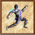 скорость | |
|---|---|---|---|---|---|
| Дух воздуханейтрал | 6 → 7 | ||||
| КрестоносецЖизнь | 65 → 75 | ||||
| ЦиклопСила | 30/24 → 27/22 | ||||
| Отродье ядаСмерть | 3 → 4 | 26/26 → 24/23 | |||
| Элементаль землинейтрал | 6 → 7 | ||||
| ИфритХаос | 4 → 5 | 25/23 → 24/22 | |||
| Огненный элементальнейтрал | 6 → 7 | ||||
 ДжиннПорядок ДжиннПорядок | 6 → 5 | 10/18 → 9/16 | 30 → 28 | ||
 ГрифонПрирода ГрифонПрирода | 4 → 5 | ||||
| Ледяной демоннейтрал | 4 → 5 | 70 → 80 | |||
| МонахЖизнь | 20/22 → 22/20 | 55 → 60 | 18 → 22 | ||
| НагаПорядок | 4 → 5 | ||||
| Огр-магСила | 18/16 → 24/20 | 4 → 5 | |||
| ЕдинорогПрирода | 5 → 6 | 80 → 85 | |||
| ВампирСмерть | 3 → 4 | 30/30 → 27/27 | |||
| Гоблин-рыцарьнейтрал | 20/26 → 18/23. |
| урон | |
|---|---|
| АнгелЖизнь | 40–65 → 35–60 |
| БегемотСила | 55–80 → 50–70 |
 Чёрный драконХаос Чёрный драконХаос | 55–110 → 50–100 |
| Костяной драконСмерть | 45–65 → 40–60 |
 ЧемпионЖизнь ЧемпионЖизнь | 24–36 → 22–32 |
| ДьяволСмерть | 34–50 → 30–50 |
| Драконий големПорядок | 36–55 → 35–50 |
| Волшебный драконПрирода | 34–50 → 30–45 |
| ГидраХаос | 28–60 → 25–55 |
| Богомолнейтрал | 34–50 → 31–45 |
 ФениксПрирода ФениксПрирода | 45–65 → 40–60 |
| Морское чудищенейтрал | 45–65 → 40–60 |
| Громовая птицаСила | 28–40 → 25–35 |
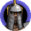 ТитанПорядок | 34–50 → 30–45 |
| Злая волшебницанейтрал | 20–34 → 18–30 |
| Гаргантюанейтрал | 28–40 → 25–35 |
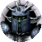 Тёмный чемпионнейтрал | 30–42 → 25–40 |
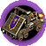 Катапультанейтрал | 20–34 → 20–30 |
| Бешеный крушительнейтрал | 40–55 → 35–50 |
| Мегадраконнейтрал | 50–100 → 45–90. |
Опыт за существ (он же их ценность для компьютера и «цена» при призыве) пересчитан под новые параметры: за младших чуть больше, за 3-й и 4-й уровень чуть меньше. Вручную: Фея 10, Огр-маг 130, Джинн 120, Водяной элементаль 90, Нага и Вампир без изменений. Поэтому призыв фей, волков и других младших существ даёт немного меньше существ, а фениксов — немного больше. Было → стало:
Гном 8 → 9Берсерк 8 → 9Халфлинг 7 → 8Бес 5 → 6Лепрекон 7 → 8Орк 10 → 11Пират 7 → 8Скелет 6 → 7Оруженосец 7 → 8Фея 7 → 10Троглодит 8 → 9Волк 11 → 12Зомби 10 → 11Джинн 105 → 120Ледяной демон 157 → 168Монах 107 → 112Огр-маг 101 → 130Единорог 120 → 124Водяной элементаль 73 → 90Гоблин-рыцарь 157 → 140Чёрный дракон 1233 → 1176Костяной дракон 621 → 592Чемпион 320 → 304Дьявол 614 → 599Драконий голем 630 → 609Волшебный дракон 612 → 578Гидра 617 → 588Богомол 614 → 584Феникс 609 → 581Морское чудище 624 → 595Громовая птица 406 → 381Титан 616 → 582Злая волшебница 750 → 707Гаргантюа 800 → 751Тёмный чемпион 1000 → 950Катапульта 800 → 770Бешеный крушитель 800 → 757Мегадракон 1500 → 1423Вернуть оригинал: в файле h4ddraw.ini строка AltCreatureBalance=0, затем перезапустить игру.
Навыки переделаны. Для всех игроков, компьютер играет по тем же правилам.
Поиск пути на Мастере и Гроссмейстере (см. ниже) тоже возвращается этой строкой.
Вернуть оригинал: в файле h4ddraw.ini строка AltSkillBalance=0, затем перезапустить игру.
Классы героев: новые способности. Для всех игроков, компьютер играет по тем же правилам.
Вернуть оригинал: в файле h4ddraw.ini строка AltClassBalance=0, затем перезапустить игру.
Численность армий показывается числами. Вместо «Мало», «Немного», «Группа» и других слов игра пишет точный диапазон: 1-4, 5-9, 10-19, 20-49, 50-99, 100-249, 250-499, 500-999, 1000-2499, 2500+.
Шахты на жилах дешевле. Построить шахту на жиле теперь стоит: золотую — 5000 , 5 и 5 (было 15000, 20 и 20); лесопилку и рудник — 1500 и 5 (было 2500 ); шахту кристаллов, серы, самоцветов или ртути — 3000 и 5 (было 4000–5000 и до 10 ). Для всех игроков, включая компьютер. Действует и в старых сохранениях.
Почвы и передвижение. На карте болото теперь отнимает 1.75 хода за клетку (было 2), снег — 1.5 (было 1.75). Существа на родной почве ходят по ней без штрафа; армия получает это, если почва родная для всех её существ. В бою штрафов почв больше нет, а войска, для которых почва битвы родная, получают +1 к Скорости и +1 к Передвижению. Заклинание «Прогулка» делает любую местность родной для отряда, а сапоги почвы — для героя.
«Поиск пути» на Мастере и Гроссмейстере. Каждый шаг по любой местности стоит 0,9 и 0,75 хода, как по дороге, вместо прибавки +25% и +50% к запасу хода.
Предел боя — 100 раундов, как в HotA. Затем нужно отступить или откупиться, а против нейтралов и компьютера можно доиграть бой автоматически. В бою двух игроков нападающий, который не может ни отступить, ни откупиться, проигрывает.
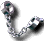
Оковы войны на пределе не мешают.В первом раунде боя нельзя отступить или откупиться — ударить Армагеддоном и сразу уйти больше не выйдет.
Мораль в бою падает медленнее. Армия теряет 1 мораль за каждые 20% потерянных войск сверх потерь противника (было 10%).
Уровни сложности переделаны. Нейтральные армии и опыт за бои теперь одинаковы на всех уровнях, как на Ученике. Раньше на Чемпионе нейтралов было втрое больше, а опыта втрое меньше. Сложность теперь задают золото на старте, доход компьютера, его стройка и сила его армий в быстром бою с нейтралами:
| Новичок | Ученик | Мастер | Магистр | Чемпион | |
|---|---|---|---|---|---|
| Ваше золото | 20000 | 15000 | 10000 | 5000 | 0 |
| Золото компьютера | 0 | 5000 | 10000 | 15000 | 20000 |
| Доход компьютера | −25% | обычный | +25% | +50% | +100% |
| Компьютер не строит | каждый 3-й день | каждый 6-й день | — | — | — |
| Нейтралы и опыт | обычные | обычные | обычные | обычные | обычные |
| ИИ против нейтралов | ×2 | ×3 | ×4 | ×4 | ×4 |
«ИИ против нейтралов» — во сколько раз армии компьютера сильнее обычного в быстром бою с нейтралами. На Новичке компьютер играет упрощённым ИИ, с Ученика — полным. В бою компьютер на всех уровнях действует в полную силу.
Вернуть нейтралов и опыт как в оригинале: в файле h4ddraw.ini строка NeutralByDifficulty=1.
Новые описания уровней сложности. Одни названия везде: Новичок, Ученик, Мастер, Магистр, Чемпион. Описания рассказывают, как уровни работают с модом. Исправлены ошибки старого перевода.
Заклинания (по образцу мода Heroes IV: Arena). 14 заклинаний перенесены на другой уровень гильдии магов. Смерть: Отмена чар 1→2,
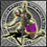
Слабость 2→1, Общая отмена чар 3→5, Поднять вампиров 5→4, Общая слабость 4→3. Жизнь: Воздаяние 2→1, Массовый экзорцизм 4→3. Природа: Зыбучие пески 2→3. Порядок: Снятие чар 1→2, Трусость 2→1, Телепортация 3→4, Ослепление 4→3, Врата города 3→5, Зеркало боли 5→3. Все заклинания стоят в 1,5 раза больше маны: по уровням 3 / 5 / 8 / 12 / 18 (было 2 / 3 / 5 / 8 / 12); призыв демонов — как раньше. У существ-магов маны в 1,5 раза больше, поэтому колдуют они столько же. Жезлы перезаряжаются дольше; жезл огненных шаров колдует раз в 3 раунда. Святилище держится 3 хода отряда (было 6). Трясину больше нельзя выучить. Поднятых мертвецов, вампиров, призванных Зовом смерти и бесов нельзя снять «Снятием чар». Телепортации и Гипнозу нужна прямая видимость цели; Смещение не отражается сопротивлением врага. Вернуть оригинал: в файле h4ddraw.ini строка AltSpellBalance=0.Артефакты. 36 артефактов сменили уровень, а значит, и то, как часто они попадаются. Стали малыми (были большими): посохи Святого Ранана, Смерти, Волшебства, Призыва, Хаоса и Силы, Копьё кентавра, Кинжал Тинана, Шлем силы. Стали большими: Алебарда стражи, Ужасная маска, Кольцо постоянства,
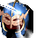
Щит разума, Кольцо скорости, Шлем Маллиха (были малыми), Высшая корона магов (была реликвией). Стали сокровищами (были малыми): Венец мудрости, жезлы Благословения, Проклятия, Ускорения и Слабости, Огнеупорные сапоги, Снегоступы, Сапоги крокодила, Жаровня серы, Кристальная фигурка, Фляга ртути, Шкатулка самоцветов. Стали малыми (были сокровищами): Шёлковые стрелы, Кольцо здоровья, Кольцо защиты, Кольцо полководца, Кристалл памяти, Знак мужества. Шапка знаний и Кольцо волшебника — теперь обычные предметы за 1000 . Огонь демона, Зелье маны и Флакон кислоты стоят 750 (было 500), Нектар бессмертия — 1500 (было 1000). Кошель скряги даёт скидку на найм 20% (было 10%), Ожерелье очарования — +10% к очарованию (было 5%), Кольцо защиты и Кольцо полководца — +15% армии (было 20%). Щиты и булава слабее: Гномий щит +10% к защите (было 20%), Стойкий щит +20% (было 30%), Булава крестоносца +20% к урону (было 30%). Сопротивление магии вдвое меньше: Плащ оберега 15%, Капюшон сопротивления 25%, Плащ защиты 15% для всей армии, Мантия отражения чар 35%, Неуязвимый плащ Нинера 50%. Перчатки наездника дают +3 хода, Сапоги странника +6 (было +25% и +50%) — один раз в начале дня: если надеть их посреди дня, прибавка будет только со следующего, а если снять — полученный ход останется. Зелье сопротивления даёт 30% к сопротивлению магии (было 50%). Символ неудачи даёт врагам −5 удачи (было: «Неудача», −10), и только пока его носитель жив в бою. В старых сохранениях уже найденные артефакты остаются прежними. Вернуть оригинал: в файле h4ddraw.ini строка AltArtifactBalance=0.Армагеддон — огненное заклинание. Существа под Сопротивлением огню, армия героя со Щитом из чешуи дракона и огнеупорные существа (огненные элементали, ифриты, фениксы) больше не получают от него урона. Касается обеих сторон.
Зелье маны — только до максимума. Зелье доливает ману до максимума героя и не выше, на карте и в бою. Герою с полной маной зелье не применяется и остаётся в рюкзаке.
Случайные карты из игры: охрана сильнее в полтора раза. Каждый отряд охраны на карте, созданной в окне «Новая игра», в 1,5 раза больше — как в обычной игре на сложности «Мастер»; сложность, выбранная в партии, добавляется к этому как обычно. Свитки, святилища, гильдии магов и артефакты на такой карте теперь следуют балансу мода, Трясины на ней нет.
Новая картина главного меню в Full HD. Картина на весь экран вместо пергамента по краям, кнопки меню у правого края экрана.
Версия мода видна в главном меню — первой строкой в блоке копирайта внизу слева.
Лаунчер версии 1.0.1 — номер виден в заголовке окна.
Галочка «Альтернативный баланс» включает или выключает разом все изменения баланса мода: навыки, заклинания, существа, здания, классы и специализации героев, артефакты.
Галочка «Альтернативный ИИ» выбирает компьютерного игрока мода; без неё играет ИИ оригинальной игры с исправленными ошибками.
Язык лаунчера меняется сразу, без перезапуска.
Новая иконка и логотип — щит с драконом из оригинальной игры со значком H4Forge: наковальня с весами. Свиток в шапке окна больше не выглядит сломанным справа, а пергамент под ним тянется на всю ширину окна.
Вкладка «Твики» — только галочки. Лимит FPS и приоритет процесса теперь на основной вкладке, списки «Ускорение боя» и «Анимация существ» убраны.
Вкладка «Информация» показывает только версию мода и версию игры.
Галочки «Меню сразу после роликов» в лаунчере больше нет.
Мод больше не меняет файлы игры. Всё своё он хранит в папке h4forge, поэтому оригинальная игра без мода остаётся нетронутой, а удалить мод можно, просто убрав его файлы.
Таймер хода в настройках партии. Под флагами игроков — блок «Таймер»: «Нет», «Классический» (предел минут на ход) или «Шахматный» с тремя числами, например 12-8-2: столько минут в банке в первый день, столько добавляется в начале каждого следующего хода (остаток переносится), столько отдельно на каждый бой (что сверх — из банка, неиспользованное сгорает). Часы видны в левом верхнем углу на карте, в городе и в бою. Когда банк пуст, ход заканчивается сам, в бою — сразу после боя. Выбранное запоминается для следующей партии, но таймер действует только в той партии, где его выбрали: в кампаниях и загруженных сохранениях часов нет.
Шахматные часы: когда время вышло, ход заканчивается, даже если у героев остались ходы — игра больше не спрашивает.
Случайная карта прямо из игры. Над списком сценариев две кнопки: «Сценарии» и «Случайные карты». Во втором режиме список показывает все шаблоны генератора, включая ваши собственные, как обычные карты — с размером, числом игроков и описанием внизу. «Далее» или двойной клик по шаблону — карта генерируется с окном прогресса, и сразу открываются настройки партии с ней; в сетевой игре так же у хозяина партии. Карта нигде не сохраняется как файл и подсмотреть её нельзя — она существует только в этой партии и в её сохранениях. Нужен генератор случайных карт H4Forge RMG в папке игры (h4forge\H4Forge_RMG); без него строка так и скажет.
Некромант не держит место под маленький стек нежити. Компьютер оставляет в армии место под поднятых существ, только если их стек действительно растёт; иначе берёт отряд сильнее.
Компьютер следит за моралью армии. Собирая армию, он больше не держит в ней нежить и отряды враждебных мировоззрений, если они портят мораль остальным сильнее, чем помогают сами. Место под призванную или поднятую нежить он тоже больше не бережёт в армии живых. Заклинание поднятия нежити места в армии не держит: его держит только навык Некромантии.
Компьютер не теряет армию в своём городе. Армия, проходящая через свой город под угрозой, больше не оставляет в нём все войска — это делает только армия, посланная его защищать.
Компьютер пользуется торговым постом. Когда для постройки не хватает ресурсов, он отправляет на пост небольшой отряд и меняет там по выгодному курсу, не отвлекая основную армию.
Компьютер не стягивает армии впустую. Он больше не объявляет сбор армий против сильной охраны, когда собирать уже некого, и не стоит из‑за этого неделями на месте.
Компьютер не копит золото впустую. Пока для одной постройки не хватает ресурсов, он строит другие из своего плана, оставляя на неё всё нужное.
Компьютер точнее оценивает армии с артефактами. Прикидывая бой, он теперь учитывает скорость, передвижение в бою и сопротивление магии, которые артефакты героя дают всей армии (Кольцо скорости, Шлем командования,
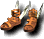
Крылатые сандалии, Плащ защиты). Атаку, защиту, боевой дух и удачу армии он учитывал и раньше.Армии действуют по общему плану. Каждый ход компьютер раздаёт армиям роли: ударная армия, оборона городов, отвоевание, подвоз войск, второй фронт, разведка. После загрузки сохранения план восстанавливается.
Сильная ударная армия. В ней 2–4 героя, которые дополняют друг друга: к воину берётся маг, общие навыки армии не повторяются. Лучшие войска из городов приходят к ней подкреплениями, гарнизоны выходят к ней сами.
Меньше пустой беготни. Армии без героя не бродят между городом и полем, подкрепления не гоняются за ушедшей армией, а ждут её у цели. Бесполезных слияний больше нет.
Артефакты и добыча. Компьютер надевает лучшие артефакты (реликвия, большой, малый, сокровище — по уровню) и забирает всё, что лежало за побеждённой охраной.
Городские врата и зелья. Компьютер переносит армию Городскими вратами к своему городу под угрозой и пьёт зелья выносливости на карте.
Разведка городов. С 5-го дня разведчик идёт открывать города соперников. Раньше компьютер их почти не находил и не нападал на них.
Порталы и разведка. Разведчик проходит в портал и открывает землю за ним, а не прыгает сразу назад. Обходы препятствий разведчики теперь ищут по всей карте и не считают проход закрытым, если его можно обойти. Армии идут через портал, когда за ним есть что взять или туда ближе к цели.
Быстрый бой: сдача. В быстром бою снова можно ответить на вопрос о сдаче, и противник может сдаться вам.
Основная армия компьютера. Не отсиживается в городе, а выходит навстречу врагу, когда может достать его за ход; старается набирать быстрые отряды, чтобы догонять противника.
Без потерянных дней. Армия компьютера не идёт к цели, путь к которой дальше перекрыт опасной охраной, и не разворачивается на полпути.
Дальний разведчик. Один разведчик компьютера смелее уходит в дальние края карты, в том числе через порталы, по пути собирая добычу, в том числе на земле соперника.
Разведчики не бегают через портал туда-сюда. За мелочью по ту сторону портала разведчик идёт, только когда на своей стороне всё собрано и разведано.
Разведчики не ходят толпой. К одной добыче идёт один разведчик — ближайший.
Разведчики не идут на верную смерть. Раньше разведчик мог пойти прямо сквозь монстров или мимо них и погибнуть, а следующий шёл той же дорогой. Теперь он не идёт туда, где по пути придётся драться с охраной (утащить находку из-под носа у охраны по-прежнему можно), а если идти больше некуда — возвращается в город.
Разведчики не бегают без дела. Разведчик больше не гоняется за отдельными скрытыми клетками за скалами, а идёт открывать настоящие неразведанные земли.
Песнь мира. Отряд компьютера под Песнью мира защищается, если до него в этом раунде доберутся сильные бойцы, а если опасности нет — идёт к вашим (против стрелков это лучше). Раньше он всегда просто шёл вперёд и принимал удар без защиты.
Компьютер собирает артефакты на бонусы армии у одного героя. Удачу, мораль, атаку и защиту существ, скорость и ход армии даёт только лучший по этому параметру герой армии, бонусы разных героев не складываются. Теперь компьютер это учитывает и не раздаёт такие артефакты разным героям впустую.
Осторожнее в походе. Главная армия компьютера не идёт на город, если рядом с ним видна более сильная вражеская армия, которая успеет туда раньше или одновременно.
Не меняться городами. Армии компьютера, идущие отбивать чужой город, возвращаются защищать свой, если успевают его удержать. На чужой город идёт столько армий, сколько нужно, а не все сразу, — остальные остаются прикрывать свои земли.
Трезвая оценка угрозы. Опасной считается только армия с героем, которая может взять город. Армию, которая стоит на месте, компьютер не боится.
Защита или отвоевание. Армии собираются в город, если удержат его или нанесут врагу серьёзные потери (от 20%). Иначе город оставляют и потом отбивают общими силами. Основная армия не идёт на верную гибель.
Гарнизон под угрозой остаётся дома. Когда враг ближе двух дней, город выкупает все войска. Стены строятся вне очереди, только если с ними город устоит.
Опыт за бой. В окне итогов боя после победы написано, сколько опыта получит каждый ваш герой.
Подсказка атаки. Наводя курсор на врага в бою, видно, сколько существ убьёт удар и ответит ли цель.
Подсказка для заклинаний и ударов по площади. Наводя заклинание урона, видно, сколько оно убьёт в каждом отряде и сколько своих заденет; дыхание, атаки нескольких клеток и выстрелы по площади показывают то же для всех, кого заденут. Выстрел по площади не вызывает ответного выстрела, и подсказка это пишет.
Выход в главное меню из боя. В «Боевых опциях» появилась кнопка «Главное меню», с тем же вопросом, что на карте.
Ровная сетка. Сетка боя без шахматной раскраски: клетки обведены тонкими тёмными линиями.
Зона хода спокойнее. Клетки, куда может дойти отряд, закрашиваются тёмным сине-серым вместо ярко-синего: зона хорошо отличается от остальных клеток, но не перекрашивает местность.
Тень отрядов и пути. Если в настройках боя включена сетка или зона хода, клетки под отрядами затемнены — видно, сколько места занимает каждый. В свой ход наведите курсор на клетку или на врага: чуть затемнится полоса, по которой пройдёт отряд, а клетки, где он встанет, станут такими же тёмными, как под отрядами. Так видно, встанет ли он вплотную к другому отряду и дойдёт ли до врага за этот ход. Сторона атаки выбирается курсором. Тень рисуется на земле, под отрядами.
Сколько раундов осталось заклинанию. В окне существа в бою (правый щелчок по отряду) на значке каждого заклинания, действующего ограниченное время, в правом нижнем углу, в тёмном кружке, стоит число оставшихся раундов, а в описании по правой кнопке внизу написано «Осталось раундов: N». Заклинания на весь бой — без числа.
Отряды одним кликом. В окне армии, гарнизона, города, встречи героев и в мини-армии на боковой панели. Shift+клик по отряду — делит его поровну с такими же отрядами, а если они уже равны — добавляет ещё один: первый клик делит пополам, второй — на три (Shift с перетаскиванием работает как раньше). Ctrl+клик — одно существо в свободный слот, Ctrl+Shift+клик — по одному в каждый свободный слот, Alt+клик — собрать все отряды этого существа в один. Ctrl+Alt+клик — весь отряд в другой ряд окна, например другому герою (ход тратится как при перетаскивании).
Артефакты одним кликом. Alt+клик по предмету в рюкзаке героя — надеть его. Shift+клик или клик средней кнопкой мыши по слоту на кукле героя — список предметов рюкзака, которые можно надеть в этот слот; клик по предмету надевает его. Длинный список листается ползунком, колесом мыши или стрелками.
Несколько артефактов разом. Ctrl+клик по предмету отмечает его золотой галочкой, Ctrl+A — все предметы юнита. Перетащите любой отмеченный на портрет другого юнита — к нему перейдут все отмеченные. Так же и в окне трофеев после победы.
Колесо мыши листает списки: рюкзак героя в окне армии, файлы в окнах сохранения и загрузки, сценарии, рекорды и другие списки игры.
Из чего сложен каждый параметр. Правая кнопка по атаке, защите, урону, здоровью, ходу, скорости, выстрелам, морали, удаче или сопротивлению магии в окне героя показывает, откуда взялось число: база существа, навык лучшего героя армии, каждый его артефакт, бонусы с карты и итог. В окне существа в бою — что добавляет или отнимает каждое заклинание на своём отряде (у чужих — только числа).
Видно, что за свиток. На свитках и пергаментах в рюкзаке, на кукле героя и в окне трофеев теперь нарисовано их заклинание: свиток показан развёрнутым, пергамент — расправленным, их не спутать — не нужно проверять каждый правой кнопкой.
Ресурсы можно отдать любому игроку. Окно «Торговля» в меню королевства теперь открывается и без союзника и показывает всех живых игроков — и врагов, и компьютер. Сначала идут союзники, ниже под плашкой «Враги» — остальные игроки.
Найм одним кликом. Ctrl+клик по значку прироста в окне города или по зданию-жилищу нанимает всех, кого можно, без окна найма. Обычный клик по значку, как и раньше, открывает окно найма.
Сумму можно ввести с клавиатуры. В окне «Торговля» и на рынке клик по пергаменту с числом ставит туда курсор, и число можно исправить. Ввести можно только число от 0 до максимума, ползунок двигается вслед. На рынке ресурсы меняются целыми партиями: пока введённое число не делится на партию (например, 200 , а партия стоит 750), кнопка обмена неактивна, а Enter покажет, сколько выйдет на самом деле.
nwcGoSolo: вылет после победы. Игра больше не закрывается с ошибкой, когда автоигра выигрывает партию, — после экрана победы она выходит в главное меню. Главное меню после конца такой партии больше не замирает и не остаётся без курсора. Если ваш игрок проиграл, игра теперь показывает поражение, а не победу.
nwcGoSolo: отмена и повторный запуск. Отмена на ходу соперника больше не вешает игру — соперники спокойно заканчивают ход, а затем ходит игрок. После отмены внизу экрана больше не остаётся плашка с цветом игрока, чей ход идёт. Повторное включение больше не заканчивает игру поражением, код достаточно ввести один раз. После отмены окно хода компьютера внизу экрана больше не остаётся висеть.
Новый чит nwc1. Наберите его на карте приключений: в каждую пустую ячейку выбранной армии придут 10 ангелов, вся карта откроется без тумана войны, а ход у этой армии станет бесконечным. Действует до выхода с этой карты.
Чит nwcprometheus убирает туман войны только в текущей партии. Раньше он отключал туман навсегда: все следующие игры начинались с открытой картой.
Партия, которая не кончается. Армия компьютера могла остаться «призраком» вне карты: её нельзя было найти и разбить, и игрок без городов и героев не выбывал. Теперь такого не бывает. Старое сохранение достаточно загрузить: такая армия в нём не сохраняется, и её игрок выбывает.
Вылет в ходу компьютера. Игра могла закрыться с ошибкой «pure virtual function call», когда армия компьютера погибала в бою посреди своего хода. Та же ошибка бывала, когда армия компьютера вливалась в другую.
Игра меньше нагружает процессор на карте приключений.
Бой идёт плавнее: пропали регулярные рывки, которые давала сетка поля боя.
Карта приключений больше не тормозит, когда открыта вся карта: раньше игра проседала до 5–10 кадров в секунду, теперь идёт плавно.
Арбалет снайпера: стрелки армии не теряют урон не только на расстоянии, но и из-за препятствий (и за стенами замка).
Лук короля эльфов: +1 выстрел носителю и существам его армии, в том числе тем, кто уже стреляет дважды (эльфы — 3 выстрела, герой с Грандмастером стрельбы — 3), пока носитель жив в бою. Это учитывается и в быстром бою, и когда компьютер оценивает бой перед нападением.
Щит из чешуи дракона даёт армии +30% к защите, как написано в описании (было +25%), и считается большим артефактом, как в редакторе карт (выпадал как малый).
Яд, Чума и Регенерация длились весь бой. Теперь они кончаются через 15 раундов, как сказано в описании.
Вылеты игры (ошибка R6025) во время хода компьютера: когда его армия гибла в бою по дороге, сливалась с другой или бой заканчивал игру.
Армия компьютера пыталась идти к цели, до которой нет пути, — это могло уронить игру или увести армию не туда. Теперь она выбирает другую цель, а такие задачи ей больше не даются. Новые армии компьютера больше не ставятся у города на клетку, где уже стоит армия: из-за этого основная армия и разведчик застревали на одной клетке.
Подкрепления компьютера не могли дойти до основной армии, стоявшей у своего города, и ходили вокруг днями.
Ход компьютера мог длиться до 40 секунд из-за ошибки при закупке войск в городах. Заодно второстепенные города компьютера теперь, как и задумано, не тратят деньги на войска, пока главному городу не хватает на следующую постройку (если городу не грозит враг).
Компьютер переставал строить, когда выполнил план города.
Заклинание «Ослепление» действовало на механизмы и элементалей.
Удар единорога ослеплял механизмы, элементалей, нежить и существ с иммунитетом к магии.
«Кражу магии» можно было колдовать на существ без маны: мана тратилась впустую.
Кузница на карте путала запреты артефактов: чтобы убрать длинный меч, надо было запретить арбалет, а при некоторых запретах карта зависала при запуске.
После загрузки сохранения посреди боя пропадали обереги от щитов героя, Кольцо постоянства, бонус кустов и штраф зыбучих песков — пока отряд не сделает ход.
В скриптах карт условие «Может дать навык» отвечало «да», когда у героя уже пять основных навыков или этот навык уже есть, — и обещанный навык не выдавался.
В скриптах карт «ID игрока» всегда был 0, и сообщения, предназначенные одному игроку, видели все.
Условие «у армии есть свиток» срабатывало при любом свитке, а не только при нужном.
После загрузки сохранения уменьшение удачи или морали скриптом давало +253 вместо минуса.
События по времени у нейтральных армий на картах теперь срабатывают (раньше — никогда).
Если армия сбегает из боя, начатого скриптом карты, или проигрывает его, скрипт больше не выдаёт ей существ и не начинает с ней новый бой — раньше в списке армий появлялась армия-невидимка, которой нет на карте.
В событиях жилищ, верфей, мельниц и маяков на картах проверка «владелец — такой-то цвет» и награды владельцу теперь работают (раньше владелец для них был неизвестен).
События на клетках карты с условием «только для человека» или «только для компьютера» больше не срабатывают для чужой армии, если она попала на клетку в чужой ход (например, после боя). Раньше так человек мог получить бонус, предназначенный компьютеру.
Исправлен вылет и пропажа событий дня, когда событие скрипта убирает с карты другой объект (например, отряд погибает в бою, начатом скриптом).
Событие героя на карте, которое удаляет само себя, теперь действительно больше не срабатывает (раньше повторялось в каждом бою).
Прибавка к атаке, защите, мане или скорости героя из события на карте больше не портится, если игру сохранили и загрузили до этого события.
Задание «убить героя» теперь засчитывается, даже если героя убили нейтралы.
Большие числа в переменных скриптов карты (больше 32767) больше не портятся после сохранения и загрузки.
Скрипт карты, который даёт или забирает артефакт у отсутствующей армии, больше не роняет игру.
Событие карты, которое вызывает само себя, больше не роняет игру; «удалить событие» удаляет именно своё событие, даже если перед этим было вызвано другое.
«Забрать свиток» в событиях карты забирает только свиток с нужным заклинанием.
Удача и мораль, которые событие карты даёт герою, теперь временные, как у армии (раньше оставались навсегда).
Награда из события героя достаётся владельцу героя, даже если событие сработало в чужой ход.
Вопрос из события карты в ход компьютера больше не показывается вам: компьютер отвечает сам.
Отказ от результата быстрого боя: при повторе боя вручную события героев «начало боя» больше не срабатывают второй раз.
Скрипты карт «Очистить условия победы/поражения» теперь стирают текст в «Информации о сценарии».
«Буря в песках» теперь можно выиграть: игра находит Брона и Дарксторма.
«Рука Смерти»: победа Риктиса над чужой армией больше не заканчивает вашу кампанию — только ваш собственный проигранный штурм.
«Карты раскрыты»: срок «до начала пятого месяца» теперь действует.
«Купить всех существ»: у нестреляющих существ больше не показывается дальняя атака.
Боевой маг сразу получает «Волшебный кулак», как обещает описание класса.
Мёртвый герой в армии больше не получает навыков в университетах, школах и хижинах — ни у вас, ни у компьютера.
Отделённый в окне армии отряд больше не перескакивает по диагонали через препятствия, мимо стражи и с лодки на берег. Клетку для него можно выбрать на компасе: кнопка в окне армии или клавиша Tab; мечами отмечены клетки, где нападёт монстр. Клетки компаса нарисованы ромбами, как на карте, и подсвечиваются под мышью.
Могила у ворот своего города больше не оживает сама (раньше так получалась девятая армия): героя нужно подобрать живой армией и внести в город.
Учёные на карте (тренер боя, тактик, разведчик и другие) больше не учат навыкам, запрещённым в настройках карты.
Из лодки больше нельзя копать: раньше это тратило весь ход и оставляло яму прямо на воде.
Квест «приведите героя X» больше не обмануть, назвав нанятого героя тем же именем: засчитывается только сам герой.
Очень большой отряд фениксов (сотни тысяч) больше не возрождается в количестве 0.
Заклинания очень большого отряда существ (сотни тысяч) снова наносят урон, а не лечат цель; отряд из миллионов существ снова получает и наносит урон.
Армия, чей герой погиб, теперь берёт и пустой город, а не только город с защитниками; герой сразу оживает в захваченном городе.
Описание Грааля Силы («Праздник Жизни») теперь честное: +25% прироста получают все остальные города игрока, а не только города Силы.
«Похищение чар» крало эффекты предметов, обереги щитов и «Мученика»; украденный «Мученик» мог намертво повесить бой. Теперь крадутся только наложенные заклинания-усиления и действие зелий.
Существо, сделав ход, теряло оберег от щита героя (например, Сопротивление огню от Щита из чешуи дракона) и снова получало его, только когда ходил сам герой. Так же вела себя неудача от вражеского Символа неудачи.
Компьютер больше не удваивает стрелы и другие аксессуары: раньше, когда все слоты аксессуаров героя были заняты, подобранная стрела попадала в рюкзак дважды.
Мёртвый герой больше не прибавляет армии атаку, защиту, удачу, мораль и скорость в окне армии: числа там теперь такие же, как в бою.
Ничего не найдено.
Cheaper Citadel and Castle. The Citadel costs 3000 , 5 and 5 (was 7500, 10 and 10). The Castle costs 5000 , 10 and 10 (was 7500, 10 and 10). For every faction and every player. Without the mod the game keeps its old prices.
New costs and requirements for eleven buildings. For every player; the computer builds by the same rules.
To get the original back: AltBuildingBalance=0 in h4ddraw.ini, then restart the game.
New creature stats. The lower levels are closer in strength to the higher ones, as in Heroes III: level 1 and 2 creatures grow faster and hit harder, many level 3 creatures grow faster, some have less attack and defence, level 4 creatures deal less damage. For every player and the neutral armies. Was → now:
| growth | damage | attack/defence | |
|---|---|---|---|
| BanditChaos | 26 → 33 | 1–3 → 1–4 | |
| CentaurMight | 9 → 12 | 3–5 → 3–6 | |
| CrossbowmanLife | 16 → 21 | ||
| DwarfOrder | 18 → 23 | 2–3 → 2–4 | 11/11 → 10/13 |
| BerserkerMight | 19 → 24 | 2–3 → 2–4 | |
| HalflingOrder | 23 → 29 | 1–2 → 1–3 | |
| ImpDeath | 28 → 36 | 1–2 → 1–3 | |
| Leprechaunneutral | 22 → 28 | 1–2 → 1–3 | |
| OrcChaos | 16 → 21 | 1–3 → 1–4 | |
| Peasantneutral | 36 → 46 | 2–3 → 2–4 | |
| Pirateneutral | 24 → 31 | 1–2 → 1–3 | |
| SkeletonDeath | 1–2 → 1–3 | ||
| SquireLife | 21 → 27 | 2–3 → 2–4 | |
| SpriteNature | 1–2 → 1–3 | ||
| Troglodyteneutral | 19 → 24 | 2–3 → 2–4 | |
| WolfNature | 15 → 19 | 2–3 → 2–4 | |
| Zombieneutral | 15 → 19 | 2–4 → 2–5. |
| growth | damage | attack/defence | hit points | map movement | |
|---|---|---|---|---|---|
| BallistaLife | 7 → 10 | 5–7 → 6–8 | 8 → 11 | ||
| Evil Eyeneutral | 6 → 9 | 3–7 → 4–8 | |||
| CerberusDeath | 7 → 11 | 4–6 → 5–8 | |||
| ElfNature | 7 → 10 | 3–4 → 3–5 | |||
| Gargoyleneutral | 8 → 12 | 4–6 → 5–7 | |||
| GhostDeath | 9 → 12 | 2–4 → 3–5 | |||
| Gold GolemOrder | 6 → 9 | 8–12 → 10–14 | |||
| HarpyMight | 8 → 12 | 4–5 → 3–8 | |||
| MageOrder | 8 → 11 | 3–4 → 3–5 | |||
| MedusaChaos | 6 → 9 | 3–6 → 4–6 | |||
| Mermaidneutral | 8 → 12 | 5–8 → 6–10 | |||
| MinotaurChaos | 6 → 9 | 5–10 → 6–12 | |||
| Mummyneutral | 8 → 12 | 5–8 → 6–10 | 15/16 → 15/18 | 30 → 40 | |
| NomadMight | 6 → 9 | 6–9 → 7–11 | |||
| PikemanLife | 9 → 13 | 6–8 → 7–10 | |||
| Satyrneutral | 8 → 12 | 5–8 → 6–10 | |||
| Trollneutral | 6 → 9 | 6–12 → 7–14 | |||
| White TigerNature | 6 → 9 | 6–8 → 7–10. |
| growth | attack/defence | hit points | map movement | speed | |
|---|---|---|---|---|---|
| Air Elementalneutral | 6 → 7 | ||||
| CrusaderLife | 65 → 75 | ||||
| CyclopsMight | 30/24 → 27/22 | ||||
| Venom SpawnDeath | 3 → 4 | 26/26 → 24/23 | |||
| Earth Elementalneutral | 6 → 7 | ||||
| EfreetChaos | 4 → 5 | 25/23 → 24/22 | |||
| Fire Elementalneutral | 6 → 7 | ||||
| GenieOrder | 6 → 5 | 10/18 → 9/16 | 30 → 28 | ||
| GriffinNature | 4 → 5 | ||||
| Ice Demonneutral | 4 → 5 | 70 → 80 | |||
| MonkLife | 20/22 → 22/20 | 55 → 60 | 18 → 22 | ||
| NagaOrder | 4 → 5 | ||||
| Ogre MageMight | 18/16 → 24/20 | 4 → 5 | |||
| UnicornNature | 5 → 6 | 80 → 85 | |||
| VampireDeath | 3 → 4 | 30/30 → 27/27 | |||
| Goblin Knightneutral | 20/26 → 18/23. |
| damage | |
|---|---|
| AngelLife | 40–65 → 35–60 |
| BehemothMight | 55–80 → 50–70 |
| Black DragonChaos | 55–110 → 50–100 |
| Bone DragonDeath | 45–65 → 40–60 |
| ChampionLife | 24–36 → 22–32 |
| DevilDeath | 34–50 → 30–50 |
| Dragon GolemOrder | 36–55 → 35–50 |
| Faerie DragonNature | 34–50 → 30–45 |
| HydraChaos | 28–60 → 25–55 |
| Mantisneutral | 34–50 → 31–45 |
| PhoenixNature | 45–65 → 40–60 |
| Sea Monsterneutral | 45–65 → 40–60 |
| ThunderbirdMight | 28–40 → 25–35 |
| TitanOrder | 34–50 → 30–45 |
| Evil Sorceressneutral | 20–34 → 18–30 |
| Gargantuanneutral | 28–40 → 25–35 |
| Dark Championneutral | 30–42 → 25–40 |
| Catapultneutral | 20–34 → 20–30 |
| Frenzied Gnasherneutral | 40–55 → 35–50 |
| Megadragonneutral | 50–100 → 45–90. |
Creature experience (also their value for the computer and their "price" when summoned) is recalculated for the new stats: a little more for the lower levels, a little less for levels 3 and 4. Set by hand: Sprite 10, Ogre Mage 130, Genie 120, Water Elemental 90, Naga and Vampire unchanged. So summoning sprites, wolves and other low-level creatures gives slightly fewer creatures, phoenixes slightly more. Was → now:
Dwarf 8 → 9Berserker 8 → 9Halfling 7 → 8Imp 5 → 6Leprechaun 7 → 8Orc 10 → 11Pirate 7 → 8Skeleton 6 → 7Squire 7 → 8Sprite 7 → 10Troglodyte 8 → 9Wolf 11 → 12Zombie 10 → 11Genie 105 → 120Ice Demon 157 → 168Monk 107 → 112Ogre Mage 101 → 130Unicorn 120 → 124Water Elemental 73 → 90Goblin Knight 157 → 140Black Dragon 1233 → 1176Bone Dragon 621 → 592Champion 320 → 304Devil 614 → 599Dragon Golem 630 → 609Faerie Dragon 612 → 578Hydra 617 → 588Mantis 614 → 584Phoenix 609 → 581Sea Monster 624 → 595Thunderbird 406 → 381Titan 616 → 582Evil Sorceress 750 → 707Gargantuan 800 → 751Dark Champion 1000 → 950Catapult 800 → 770Frenzied Gnasher 800 → 757Megadragon 1500 → 1423To get the original back: AltCreatureBalance=0 in h4ddraw.ini, then restart the game.
Skills reworked. For every player; the computer plays by the same rules.
Master and Grandmaster Pathfinding (below) is switched back by the same line.
To get the original back: AltSkillBalance=0 in h4ddraw.ini, then restart the game.
Hero classes: new abilities. For every player; the computer plays by the same rules.
To get the original back: AltClassBalance=0 in h4ddraw.ini, then restart the game.
Army sizes shown as numbers. Instead of "few", "several", "band" and the other words the game shows the exact range: 1-4, 5-9, 10-19, 20-49, 50-99, 100-249, 250-499, 500-999, 1000-2499, 2500+.
Cheaper mines on mine sites. Building a mine on a site now costs: a gold mine 5000 , 5 and 5 (was 15000, 20 and 20); a sawmill or an ore pit 1500 and 5 (was 2500 ); a crystal, sulfur, gem or mercury mine 3000 and 5 (was 4000–5000 and up to 10 ). For every player, the computer included. Works in old saved games too.
Terrain and movement. On the adventure map swamp now costs 1.75 movement per tile (was 2) and snow 1.5 (was 1.75). Creatures move on their native terrain without a penalty; an army gets this when the terrain is native to all its creatures. In combat there are no terrain penalties any more, and troops fighting on their native terrain get +1 Speed and +1 Movement. Terrain Walk makes every terrain native for the target; terrain boots do so for a hero.
Master and Grandmaster Pathfinding. Every step on any terrain costs 0.9 and 0.75 movement, as on a road, instead of +25% and +50% daily movement.
A battle lasts at most 100 rounds, as in HotA. Then you must retreat or surrender; against neutrals and the computer the rest can be played automatically. In a battle of two players an attacker who can neither retreat nor surrender loses. Shackles of War do not hold at the limit.
No retreat or surrender in the first round of a battle - no more Armageddon and away.
Morale falls slower in combat. An army loses 1 morale per 20% of its troops lost beyond the enemy's losses (was 10%).
Difficulty levels reworked. Neutral armies and battle experience are now the same on every level, as on Intermediate. Before, Champion had three times the neutrals and a third of the experience. Difficulty now comes from starting gold, the computer's income, its building and the strength of its armies in quick combat against neutrals:
| Novice | Intermediate | Advanced | Expert | Champion | |
|---|---|---|---|---|---|
| Your gold | 20000 | 15000 | 10000 | 5000 | 0 |
| Computer's gold | 0 | 5000 | 10000 | 15000 | 20000 |
| Computer's income | −25% | normal | +25% | +50% | +100% |
| Computer skips building | every 3rd day | every 6th day | — | — | — |
| Neutrals and experience | normal | normal | normal | normal | normal |
| AI vs neutrals | ×2 | ×3 | ×4 | ×4 | ×4 |
"AI vs neutrals" is how much stronger than normal the computer's armies are in quick combat against neutrals. On Novice the computer plays a simpler AI, from Intermediate on the full one. In battle the computer fights at full strength on every level.
To get the original neutrals and experience back: NeutralByDifficulty=1 in h4ddraw.ini.
New difficulty descriptions. One set of names everywhere: Novice, Intermediate, Advanced, Expert, Champion. The descriptions tell how the levels work with the mod.
Spells (after the Heroes IV: Arena mod). 14 spells moved to another Mage Guild level. Death: Cancellation 1→2, Weakness 2→1, Mass Cancellation 3→5, Raise Vampires 5→4, Mass Weakness 4→3. Life: Retribution 2→1, Mass Exorcism 4→3. Nature: Quicksand 2→3. Order: Dispel 1→2, Cowardice 2→1, Teleport 3→4, Blind 4→3, Town Gate 3→5, Pain Mirror 5→3. Every spell costs 1.5 times the spell points: 3 / 5 / 8 / 12 / 18 by level (was 2 / 3 / 5 / 8 / 12); the Summon Demon spells are unchanged. Spellcasting creatures have 1.5 times the spell points, so they cast as often as before. Wands recharge more slowly; the Wand of Fireballs casts once every 3 rounds. Sanctuary lasts 3 of the unit's turns (was 6). Mire can no longer be learned. Raised undead and vampires, Death Call's creatures and imps cannot be removed by Dispel. Teleport and Hypnotize need a line of sight to the target; enemy resistance no longer stops Displacement. To get the original back: AltSpellBalance=0 in h4ddraw.ini.
Artifacts. 36 artifacts changed their level, and with it how often they turn up. Now minor (were major): the staffs of Saint Ranan, Death, Wizardry, Summoning, Mayhem and Power, the Spear of the Centaur,
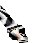
Tynan's Dagger of Despair, the Helm of Power. Now major: the Halberd of the Swiftwatch, the Hideous Mask, the Ring of Permanency, the Mind Shield, the Ring of Speed,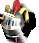
Mullich's Helm of Leadership (were minor), the Supreme Crown of the Magi (was a relic). Now treasures (were minor): the Circlet of Wisdom, the wands of Bless,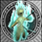
Curse, Haste and Weakness, the Fireproof Boots, the Snowshoes, the Boots of the Crocodile, the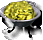
Brazier of Sulfur, the Crystal Figurine, the Flask of Mercury, the Gem Casket. Now minor (were treasures): the Spider's Silk Arrows, the Ring of Health, the Ring of Protection, the Warlord's Ring, the Crystal of Memory, the Badge of Courage. The Cap of Knowledge and the Wizard's Ring are plain items for 1000 now. Demon Fire, the Potion of Mana and the Vial of Acid cost 750 (was 500), the Potion of Immortality 1500 (was 1000). The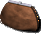
Purse of Penny Pinching takes 20% off hiring (was 10%), the Necklace of Charm adds 10% to Charm (was 5%), the Ring of Protection and the Warlord's Ring give the army +15% (was 20%). Shields and the mace are weaker: the Dwarven Shield +10% defense (was 20%), the Steadfast Shield +20% (was 30%), the Crusader's Mace +20% damage (was 30%). Magic resistance is halved: the Cloak of Warding 15%, the Cowl of Resistance 25%, the Cape of Protection 15% for the whole army, the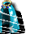
Mantle of Spell Turning 35%, Neener's Invulnerable Cloak 50%. The Equestrian's Gloves give +3 movement, the Boots of Travel +6 (was +25% and +50%), once at the start of the day: put on during the day, they add nothing until the next one; taken off, the movement already given stays. The Potion of Resistance gives 30% magic resistance (was 50%). The Fizbin of Misfortune gives the enemies −5 luck (was Misfortune, −10), and only while its bearer is alive in the battle. In old saved games the artifacts already found stay as they were. To get the original back: AltArtifactBalance=0 in h4ddraw.ini.Armageddon is a fire spell. Creatures under Fire Resistance, the army of a hero with the Dragon Scale Shield and fire-resistant creatures (fire elementals, efreet, phoenixes) no longer take damage from it. This applies to both sides.
The Potion of Mana stops at the maximum. The potion fills a hero's spell points up to the maximum and no further, on the map and in combat. A hero whose spell points are full cannot drink it, and the potion stays in the backpack.
Random maps made in the game: guards half again as strong. Every guard army on a map made from the New game window is 1.5 times larger, as in a normal game on the Master difficulty; the difficulty chosen for the game adds to it as usual. Scrolls, shrines, mage guilds and artifacts on such a map now follow the mod's balance, and there is no Mire on it.
A new Full HD main menu picture. The painting fills the screen instead of parchment at the sides, the menu buttons sit at the right edge.
The mod version is shown in the main menu — the first line of the copyright block at the bottom left.
Launcher version 1.0.1 — the number is shown in the window title.
The "Alternative balance" box turns all of the mod's balance changes on or off at once: skills, spells, creatures, buildings, hero classes and specialties, artifacts.
The "Alternative AI" box picks the mod's computer player; without it the original game's AI plays, with its bugs fixed.
The launcher language changes at once, with no restart.
A new icon and logo — the original game's dragon shield with the H4Forge badge: an anvil with scales. The scroll at the top of the window no longer looks broken on the right, and the parchment under it spans the whole width.
The Tweaks tab holds only check boxes. The FPS limit and process priority moved to the main tab; the combat speed and creature animation lists are gone.
The Info tab shows only the mod version and the game version.
The "Menu right after the intro" box is gone from the launcher.
The mod no longer changes the game's files. It keeps everything of its own in the h4forge folder, so the original game without the mod stays untouched, and removing the mod is just deleting its files.
A turn timer in the game settings. Below the player flags, a "Timer" block: "None", "Classic" (a minute limit per turn) or "Chess" with three numbers, for example 12-8-2: that many minutes in the bank on the first day, that many added at the start of every later turn (what is left carries over), that many for each battle on its own (anything beyond comes out of the bank, what is unused burns). The clock is shown at the top left on the map, in a town and in a battle. When the bank is empty the turn ends by itself, in a battle right after the battle. The choice is remembered for the next game, but the timer only runs in the game it was chosen for: campaigns and loaded saves have no clock.
Chess clock: when the time is up the turn ends, even if heroes can still move — the game no longer asks.
A random map straight from the game. Two buttons above the scenario list: "Scenarios" and "Random maps". In the second mode the list shows every generator template, your own ones included, as ordinary maps — with the size, the number of players and the description below. "Next" or a double-click on a template generates the map behind a progress box and the game settings open with it at once; a network host gets the same. The map is never saved as a file and cannot be peeked at — it exists only in that game and its saves. The H4Forge RMG generator must be in the game folder (h4forge\H4Forge_RMG); without it the line says so.
A necromancer no longer keeps room for a small undead stack. The computer keeps a slot for raised creatures only while their stack really grows; otherwise it takes a stronger stack.
The computer minds its army's morale. When it builds an army it no longer keeps undead or stacks of opposed alignments that cost the others more morale than they are worth. It also no longer saves a place for summoned or raised undead in an army of the living. A spell that raises undead no longer reserves a place at all: only the Necromancy skill does.
The computer no longer loses an army in its own town. An army passing through its threatened town no longer leaves all its troops there - only an army sent to defend it does.
The computer uses trading posts. When a building lacks resources, it sends a small party to a trading post and trades there at the better rate, without taking the main army off its way.
The computer no longer gathers its armies for nothing. It no longer calls its armies together against a strong guard when there is no one left to call, so it no longer stands still for weeks.
The computer no longer hoards gold. While one building waits for resources, it builds others from its plan and keeps everything the waiting one needs.
The computer judges armies with artifacts better. When it weighs up a battle it now counts the speed, combat movement and magic resistance a hero's artifacts give the whole army (Ring of Speed, Helm of Command, Winged Sandals, Cape of Protection). It already counted the army's attack, defense, morale and luck.
Armies follow one plan. Every turn the computer gives each army a role: strike army, town defence, recapture, reinforcement, second front, scouting. The plan is restored after loading a saved game.
A strong strike army. It has 2–4 heroes who complement each other: a mage joins a warrior, army-wide skills are not doubled. The best troops from the towns come to it as reinforcements, garrisons march out to it on their own.
Less pointless running around. Armies without a hero no longer wander between town and field, reinforcements wait for the strike army at its target instead of chasing it. No more useless merges.
Artifacts and loot. The computer wears its best artifacts (relic, major, minor, treasure — by level) and picks up everything that lay behind a defeated guard.
Town Gate and potions. The computer casts Town Gate to reach its town under threat and drinks Potions of Endurance on the adventure map.
Scouting towns. From day 5 a scout goes to find rival towns. Before, the computer hardly ever found them or attacked them.
Portals and scouting. A scout goes through a portal and explores the land beyond instead of jumping straight back. Scouts now look for a way round an obstacle across the whole map and no longer give up on a pass that can be walked around. Armies take a portal when there is something to take beyond it or the goal is nearer that way.
Quick combat: surrender. In quick combat you can answer the surrender question again, and an enemy can surrender to you.
The computer's main army. It no longer hides in a town but goes out to meet the enemy when it can reach it in one move, and prefers fast troops to catch the enemy.
No lost days. A computer army no longer heads for a target whose way is blocked further on by a dangerous guard, and no longer turns back halfway.
Far scout. One of the computer's scouts goes boldly to the far parts of the map, through portals too, picking up loot on the way, a rival's land included.
Scouts stop hopping through portals. A scout goes for small things beyond a portal only when its own side is collected and explored.
Scouts do not crowd. One scout goes for a find - the nearest one.
Scouts no longer walk to certain death. A scout used to walk through or past the monsters on its way and die, and the next one took the same road. Now it does not go where it would have to fight a guard on the way (snatching a find from under a guard's nose is still allowed), and with nowhere left to go it returns to a town.
Scouts stop running around for nothing. A scout no longer chases single hidden cells behind rocks; it goes to open real unexplored land.
Song of Peace. A computer troop under Song of Peace defends when strong fighters can reach it this round, and walks towards you when there is no danger (better against shooters). It used to always walk on and take the blow without defending.
The computer keeps army-bonus artifacts on one hero. Luck, morale, the creatures' attack and defence, speed and the army's movement come only from the army's best hero for that bonus; bonuses of different heroes do not add up. The computer now knows this and no longer wastes such artifacts by spreading them over several heroes.
Safer campaigns. The computer's main army no longer marches on a town when a stronger enemy army is seen near it and would get there first or at the same time.
No more trading towns. Computer armies on their way to retake an enemy town turn back to defend their own when they can hold it in time. Only as many armies as needed go for an enemy town, not all at once; the rest stay to cover their own lands.
A sober view of threats. Only an army with a hero that can take the town counts as a threat. An army that stays where it is no longer scares the computer.
Defend or recapture. Armies gather in a town if they can hold it or cost the enemy heavy losses (20% or more). Otherwise the town is given up and retaken later by all armies together. The main army does not march to certain death.
A garrison under threat stays home. With an enemy closer than two days, the town buys all the troops it can. Walls are built out of turn only if they let the town hold.
Experience for a battle. After a victory the combat results window says how much experience each of your heroes gets.
Attack hint. Pointing at an enemy in combat shows how many creatures the blow kills and whether the target strikes back.
Hint for spells and area attacks. Aiming a damage spell shows how many creatures it kills in each stack and how many of your own it hits; breath, multi-cell attacks and area shots show the same for everyone they hit. An area shot draws no return fire, and the hint says so.
Back to the main menu from combat. The combat Options window has a Main menu button, with the same question as on the map.
An even grid. The combat grid has no checkerboard colouring any more: thin dark lines outline the cells.
A quieter movement area. The cells a troop can reach are shaded a dark slate blue instead of bright blue: the area stands out from the other cells without recolouring the terrain.
Troop shadows and paths. With the combat grid or the movement shading on in the options, the cells under the troops are darkened, so you can see how much room each one takes. On your turn point at a cell or at an enemy: the strip the troop will walk along darkens slightly, and the cells where it will stand get as dark as those under troops. You can see whether it will stand right next to another troop and whether it reaches the enemy this turn. The side of attack is picked with the cursor. The shadow lies on the ground, under the troops.
Rounds left on a spell. In the creature window in combat (right-click a troop) the icon of every spell that lasts a limited time shows the rounds it has left in a dark circle in its bottom-right corner, and its right-click description ends with "Rounds left: N". Spells that last the whole battle show no number.
Stacks in one click. In the army, garrison, town and hero meeting windows and in the mini-army on the side panel. Shift+click a stack to share it equally with the other stacks of that creature, or, when they are already equal, to add one more stack: the first click halves it, the second makes thirds (Shift with dragging works as before). Ctrl+click puts one creature into a free slot, Ctrl+Shift+click one into every free slot, Alt+click gathers every stack of that creature into one. Ctrl+Alt+click sends the whole stack to the other row of the window, for example to the other hero (movement is spent as when dragging).
Artifacts in one click. Alt+click an item in a hero's backpack to put it on. Shift+click or middle-click a slot on the hero's figure for a list of the backpack items that fit it; click one to put it on. A long list scrolls with its scrollbar, the mouse wheel or the arrow keys.
Several artifacts at once. Ctrl+click an item to mark it with a gold tick, Ctrl+A marks all of the unit's items. Drag any marked item onto another unit's portrait and all the marked ones go to it. The same in the window that shares out the trophies after a victory.
The mouse wheel scrolls lists: the hero's backpack in the army window, the files in the save and load windows, the scenarios, the high scores and the game's other lists.
What each number is made of. Right-click attack, defence, damage, hit points, movement, speed, shots, morale, luck or magic resistance in the hero window to see where the number comes from: the creature's base, the skill and each artifact of the army's best hero, map bonuses and the total. In the creature window in battle: what each spell on your own stack adds or takes away (other stacks show only the numbers).
See what a scroll is. Scrolls and parchments in the backpack, on the hero's figure and in the trophy window now show their spell drawn on them: the scroll unrolled, the parchment spread out, so the two never look alike — no need to right-click each one.
Resources can go to any player. The Trade window of the kingdom menu now opens without an ally and lists every living player, enemies and computer players included. Allies come first; the other players follow under an "Enemies" ribbon.
Recruit in one click. Ctrl+click a growth icon in the town window or a dwelling building to recruit as many as you can, without the recruit window. A plain click on the icon still opens the recruit window.
Type the amount. In the Trade window and at the marketplace a click on the parchment with the number puts a cursor there, and the number can be edited. Only a number from 0 to the maximum can be typed; the slider follows it. At the marketplace resources change in whole lots: while the typed number is not a whole number of lots (say 200 where a lot costs 750) the trade button is greyed out, and Enter shows what you will really get.
nwcGoSolo: crash after the victory. The game no longer closes with an error when auto-play wins - after the victory screen it goes to the main menu. The main menu after such a game no longer freezes or loses the mouse cursor. If your player lost, the game now shows a defeat, not a victory.
nwcGoSolo: cancel and restart. Cancelling during an opponent's turn no longer hangs the game - the opponents finish their turns, then the player moves. After a cancel the bar with the colour of the player whose turn it is no longer stays at the bottom of the screen. Switching it back on no longer ends the game in a defeat, and the code is typed once. After a cancel the computer's turn window at the bottom of the screen no longer stays on.
A new cheat, nwc1. Type it on the adventure map: every empty slot of the selected army gets 10 Angels, the whole map opens with no fog of war and that army's movement becomes endless. It lasts until you leave this map.
The nwcprometheus cheat removes the fog of war for the current game only. It used to switch the fog off for good: every later game started with the whole map open.
A game that never ends. A computer army could be left as a "ghost" off the map: nobody could find or beat it, and its player stayed in the game with no towns and no heroes. This no longer happens. In an old save, loading it is enough: such an army is not saved, and its player drops out.
A crash on the computer's turn. The game could close with "pure virtual function call" when a computer army died in a battle in the middle of its move. The same error could come when a computer army merged into another one.
The game puts less load on the CPU on the adventure map.
Combat runs smoother: the regular stutter caused by the battlefield grid is gone.
The adventure map no longer slows down when the whole map is revealed: it used to drop to 5–10 frames per second, now it runs smoothly.
Sniper's Crossbow: the army's shooters lose no damage to obstacles (and castle walls) as well as to distance.
Bow of the Elf King: +1 shot to its bearer and the creatures of his army, including those that already shoot twice (Elves shoot 3 times, a hero with Grandmaster Archery 3), while the bearer is alive in the battle. Quick combat and the computer's estimate of a battle before it attacks count it too.
The Dragon Scale Shield gives the army +30% defense, as its description says (was +25%), and counts as a major artifact, as in the map editor (it dropped as a minor one).
Poison, Plague and Regeneration lasted the whole battle. Now they end after 15 rounds, as their descriptions say.
Game crashes (error R6025) during the computer's turn: when its army died in a battle on the way, merged with another one, or the battle ended the game.
A computer army tried to walk to a target it had no path to, which could crash the game or send the army the wrong way. Now it picks another target, and such tasks are no longer given to it. The computer no longer places a new army by its town on a cell where an army already stands: the main army and a scout got stuck on one cell because of it.
The computer's reinforcements could not reach a main army standing by its own town and circled around it for days.
The computer's turn could take up to 40 seconds because of an error in its town troop purchase. Its secondary towns now also wait, as intended, with buying troops while the main town is short of money for its next building (unless the town is threatened).
The computer stopped building once it had finished its town plan.
The Blind spell affected mechanical creatures and elementals.
The Unicorn's blow blinded mechanical creatures, elementals, the undead and creatures immune to magic.
Magic Leech could be cast on creatures with no spell points, wasting the caster's mana.
The map forge mixed up the artifact bans: to remove the long sword one had to ban the crossbow, and some bans froze the map while it started.
After loading a game saved in the middle of a battle, shield wards, the Ring of Permanence, the bushes' bonus and the quicksand penalty were missing until each stack moved.
In map scripts the "Can Give Skill" condition said yes when the hero already had five primary skills or already had that skill, and the promised skill never came.
In map scripts the Player ID was always 0, so messages meant for one player were shown to everyone.
The "army has a scroll" condition was true for any scroll, not only the one asked for.
After loading a saved game, a script lowering luck or morale raised it by 253 instead.
Timed events of neutral armies on maps now fire (before, never).
When an army flees from a fight started by a map script, or loses it, the script no longer gives it creatures or starts another fight with it — before, an invisible army appeared in the army list that was nowhere on the map.
In map events of dwellings, shipyards, windmills and lighthouses the "owner is colour X" check and rewards to the owner now work (before, the owner was unknown to them).
Map cell events marked "human only" or "computer only" no longer fire for the wrong army when it lands on the cell during another player's turn (e.g. after a battle). Before, a human could receive a bonus meant for the computer.
Fixed a crash and lost daily events when a map script removes another object from the map (for example, a unit dies in a fight started by a script).
A hero's map event that removes itself now really stops firing (before, it repeated in every battle).
A map event's bonus to a hero's attack, defense, mana or speed is no longer corrupted when the game was saved and loaded before the event.
A "kill hero X" goal now counts even when neutrals killed the hero.
Large numbers in map script variables (above 32767) are no longer corrupted by saving and loading.
A map script that gives or takes an artifact from a missing army no longer crashes the game.
A map event that calls itself no longer crashes the game; "remove event" removes its own event even when another event was called before it.
"Take scroll" in map events takes only the scroll with the right spell.
Luck and morale a map event gives a hero are now temporary, as for an army (before, they stayed for good).
The reward of a hero's event goes to the hero's owner, even when the event fires in another player's turn.
A question from a map event in the computer's turn is no longer shown to you: the computer answers itself.
Refusing a quick battle's result: when the battle is replayed by hand, the heroes' "combat begins" events no longer fire a second time.
The map scripts "Clear victory/loss conditions" now clear the text in Scenario Info.
Sandstorm can now be won: the game finds Bron and Darkstorm.
Hand of Death: Rictis beating someone else's army no longer ends your campaign - only your own failed assault does.
Final Showdown: the "before the fifth month begins" deadline now applies.
Buy All Creatures: creatures that do not shoot no longer show a ranged attack.
The Battle Mage gets Magic Fist right away, as the class description promises.
A dead hero in an army no longer gets skills at universities, schools and huts - neither yours nor the computer's.
A stack split off in the army window no longer hops diagonally past obstacles, past guards or from a boat onto the shore. You can pick its cell on a compass: the button in the army window or the Tab key; crossed swords mark the cells where a monster attacks. The compass cells are diamonds laid out as on the map and light up under the mouse.
A grave at your town's gate no longer rises by itself (that is how a 9th army appeared): pick the hero up with a living army and bring him into the town.
Scholars on the map (the combat trainer, the tactician, the scout and others) no longer teach skills the map settings ban.
You can no longer dig from a boat: it used to take the whole day's movement and leave a hole on the water.
A quest for hero X can no longer be passed by a hired hero you named X: only that hero himself counts.
A very large Phoenix stack (hundreds of thousands) is no longer reborn as zero.
Spells of a very large creature stack (hundreds of thousands) deal damage again instead of healing the target; a stack of millions takes and deals damage again.
An army whose hero fell now takes an empty town too, not only a defended one; the hero rises at once in the town it took.
The Might grail (Festival Of Life) description now tells the truth: +25% growth goes to all your other towns, not only to Strongholds.
Steal Enchantment took the effects of artifacts, the wards of a hero's shield and Martyr; a stolen Martyr could freeze the battle for good. Now it takes only cast blessings and potion effects.
A creature that moved lost the ward its hero's shield gives (for example, Fire Resistance from the Dragon Scale Shield) and got it back only when the hero himself moved. Misfortune from an enemy's Symbol of Misfortune behaved the same way.
The computer no longer doubles arrows and other accessories: when all of a hero's accessory slots were taken, a picked-up arrow landed in the backpack twice.
A dead hero no longer adds attack, defence, luck, morale and speed to the army in the army window: the numbers there now match the battle.
Nothing found.